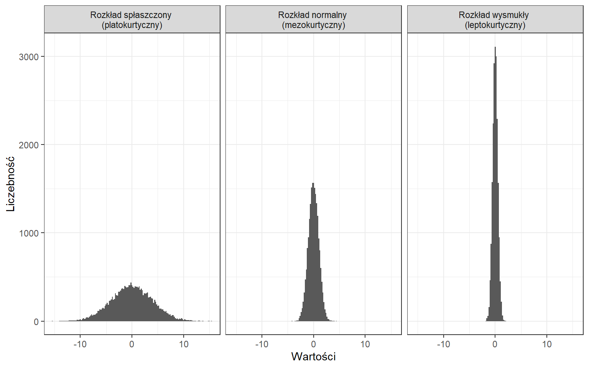
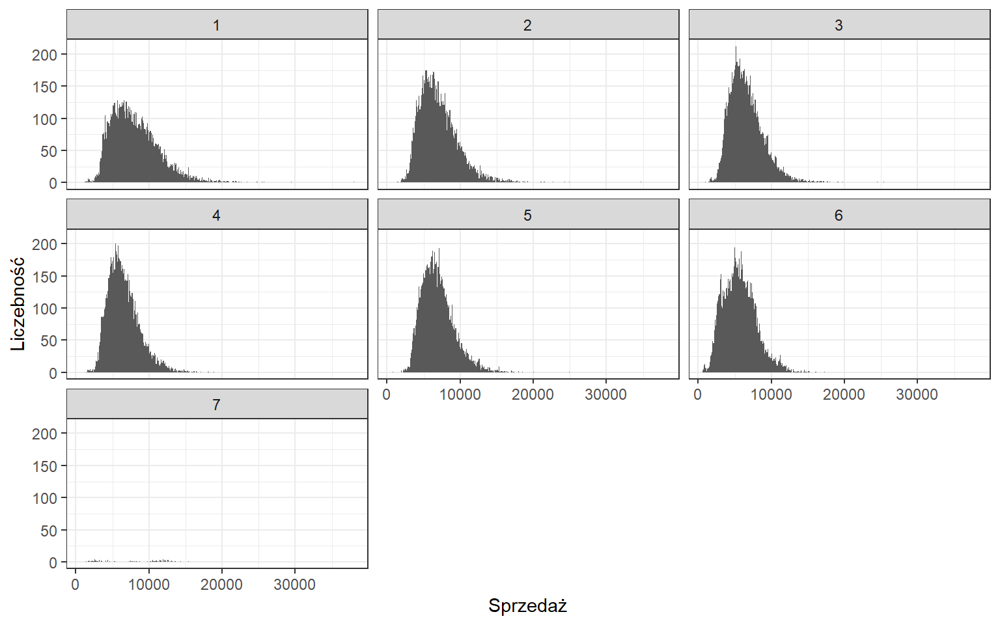
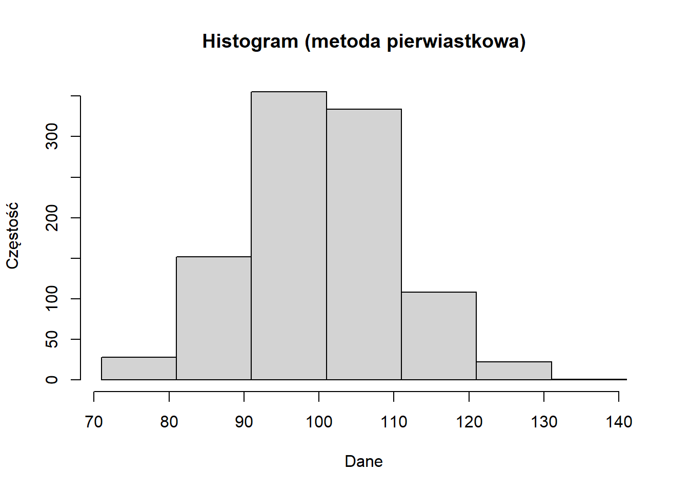
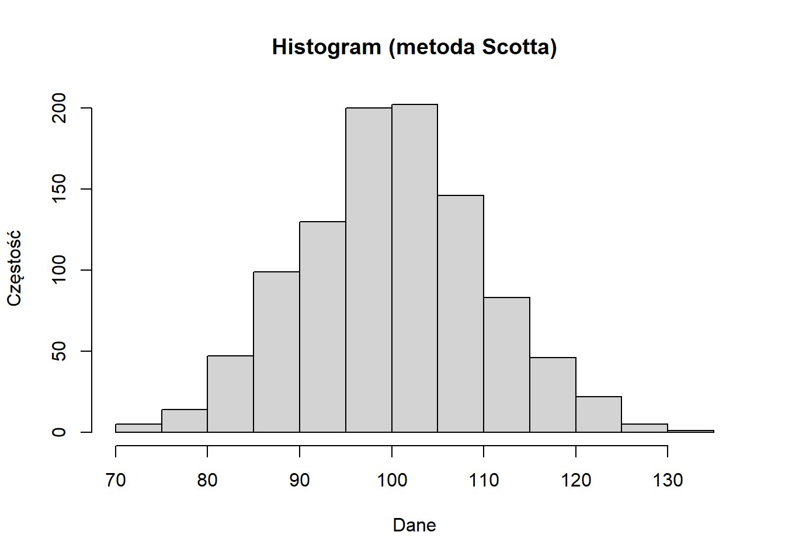
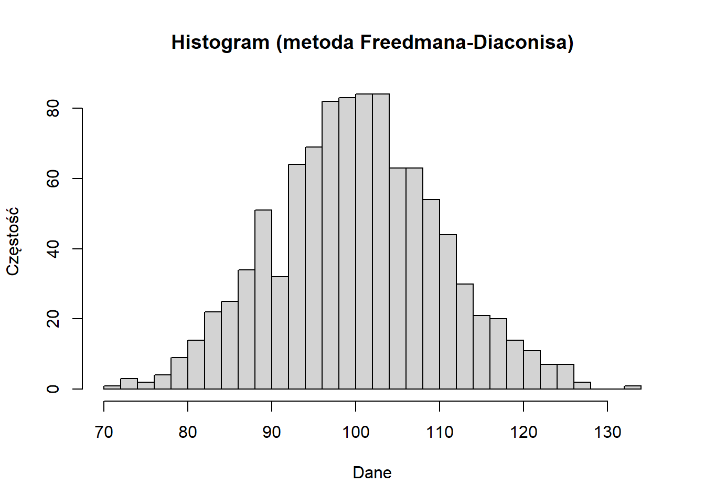

2 Wizualizacja danych
Bardzo istotną częścią statystyki jest wizualizacja wyników. Poprawne korzystanie z wykresów wymaga poznania kilku, czasami nieoczywistych, zasad:
- efekt 3D na wykresach zaburza percepcje i utrudnia porównywanie danych,
- wykresy liniowe służą przede wszystkim do prezentacji zmian w czasie,
- …
Zasoby internetowe są pełne przykładów i wzorców tworzenia wykresów:
- Graficzna prezentacja danych statystycznych - Wykresy, mapy, GIS
- Zbiór esejów o wizualizacji danych
- Flowing Data
- D3
W analizie statystycznej bardzo ważne jest pojęcie rozkładu cechy.
Rozkładem empirycznym cechy nazywamy przyporządkowanie kolejnym wartościom zmiennej (\(x_{i}\)) odpowiadającym im liczebności (\(n_{i}\)). Rozkład odzwierciedla strukturę badanej zbiorowości z punktu widzenia określonej cechy.
Najdogodniejszym sposobem graficznej prezentacji rozkładu jest histogram przedstawiający częstość poszczególnych kategorii. Histogram można utworzyć na podstawie tabeli przestawnej. W sytuacji kiedy nie wszystkie wartości są reprezentowane histogram może wyglądać dziwnie, dlatego stosuje się grupowanie wartości. W Excelu jest to możliwe z wykorzystaniem funkcji CZĘSTOŚĆ. Funkcja ta oblicza rozkład częstości występowania wartości w zakresie wartości (działa po zaznaczeniu odpowiedniego zakresu z~kombinacją CTRL+SHIFT+ENTER). Prawe przedziały są domknięte.
2.1 Rodzaje rozkładów
Ze względu na liczbę punktów ekstremalnych:
Ze względu na rodzaj zmienności:
Ze względu na skupienie wokół średniej:

W ten sposób możemy opisywać histogramy, natomiast w dalszej części zajęć dowiemy się jakie miary definiują te cechy.
Przejdźmy do naszego zbioru danych i przeanalizujmy liczbę klientów.
Okazuje się, że występuje bardzo dużo wartości równych 0, wynikających z obserwacji dni, w których sklep był zamknięty. Musimy wyeliminować zera z naszych danych.
Obecnie rozkład liczby klientów jest dużo bardziej czytelny. Niemniej możemy zauważyć wiele wartości, które występują częściej od pozostałych. Zgrupujmy słupki w przedziałach o rozpiętości 100 klientów.
Najliczniejszą kategorią stanowią dni, w których liczba klientów pochodziła z przedziału 500-600 osób. Można także zaobserwować, że rozkład charakteryzuje się asymetrią prawostronną.
2.2 Szeregi statystyczne
Przeprowadzając powyższe grupowanie utworzyliśmy kilka rodzajów szeregów statystycznych.
Szereg statystyczny jest to ciąg wielkości statystycznych usystematyzowanych według określonego ściśle kryterium. Powstaje on w wyniku grupowania bądź porządkowania. Stanowi podstawę dla prowadzenia numerycznej analizy statystycznej.
- szereg prosty to wykaz wszystkich wariantów badanej cechy np. liczba klientów dla każdego sklepu danego dnia
- szereg rozdzielczy jednostkowy (punktowy) wykaz wariantów cechy i liczebności poszczególnego wariantu np. szereg utworzony z wykorzystaniem tabeli przestawnej
- szereg rozdzielczy przedziałowy zamknięty o równych przedziałach klasowych wykaz zgrupowanych wariantów cechy i liczebności poszczególnych wariantów np. szereg utworzony z wykorzystaniem funkcji CZĘSTOŚĆ
- szereg rozdzielczy przedziałowy zamknięty o nierównych przedziałach klasowych
- szereg rozdzielczy przedziałowy otwarty - kiedy w pierwszej lub/i ostatniej grupie znajduje się przedział otwarty (zwrot poniżej/powyżej)
2.3 Dystrybuanta
Kolejnym zagadnieniem związanym z rozkładem cechy jest dystrybuanta.
Dystrybuanta empiryczna to funkcja ukazująca skumulowany rozkład cechy w n-elementowej zbiorowości. Funkcję \(F(x)\) definiuje się jako skumulowane prawdopodobieństwo wystąpienia - tj. sumę prawdopodobieństw od danego przedziału klasowego w rozkładzie empirycznym badanej cechy. Wyraża się wzorem: \[F(x)=\sum\limits_{x_{i}<x}{p_{i}},\] gdzie: \(p_{i}\) — prawdopodobieństwo wystąpienia wariantu.
Dystrybuanta empiryczna jest funkcją:
- niemalejącą,
- lewostronnie ciągłą.
Dystybuanta ciągła liczby klientów
Dystrybuanta skokowa liczby klientów
Przykładowo prawdopodobieństwo, że wystąpi dzień, w którym sklep obsłuży do 700 klientów wynosi 55%.
Zadania
Z wykorzystaniem histogramu lub innych poznanych podczas zajęć metod określ w jaki dzień tygodnia sklepy Rossmann odwiedza najwięcej klientów.

2.4 Histogramy
Jak utworzyć histogram?
Aby utworzyć histogram musimy określić szerokość przedziału. Istnieje wiele metod tworzenia tych przedziałów, najcześciej występujące przedstawiam poniżej.
Poniżej przedstawiam tabelę z rozkładem zmiennej, którą badamy
| minimum | q1 | median | mean | q3 | maximum |
|---|---|---|---|---|---|
| 71.90225 | 93.71676 | 100.0921 | 100.1613 | 106.646 | 132.4104 |
2.4.1 Metoda arbitralnie ustalanej szerokosci przedziałów
\[ k = \left \lceil \frac{\max x - \min x}{h} \right \rceil, \]
gdzie \(x\) oznacza badaną cechę ciągłą, \(h\) oznacza arbitralnie ustawioną szerokość przedziałów, a \(k\) liczba przedziałów.
2.4.2 Metoda pierwiastkowa
\[ k = \sqrt{n} \]
gdzie \(n\) oznacza liczbę obserwacji.

2.4.3 Metoda Struges’a
Sturges, H. A. (1926). The choice of a class interval. Journal of the american statistical association, 21(153), 65-66. LINK
\[ k = \lceil \log_2 n \rceil+ 1 \]
gdzie \(\lceil \bullet \rceil\) oznacza sufit lub cecha górna liczby rzeczywistej.
UWAGA: Tej metody nie należy stosować dla małych prób (np. \(n < 30\)) oraz asymetrycznych rozkładów (tj. innych niż rozkład normalny). Zachęcam do zapoznania się z dyskusją na temat tej metody: http://www.robjhyndman.com/papers/sturges.pdf
2.4.4 Metoda Uniwersytetu Rice
\[ k = \lceil 2 n^{1/3} \rceil \]
2.4.5 Metoda Doane’a
Doane, D. P. (1976). Aesthetic frequency classifications. The American Statistician, 30(4), 181-183. LINK
\[ k = 1 + \log_2( n ) + \log_2 \left( 1 + \frac { |g_1| }{\sigma_{g_1}} \right) \]
gdzie \(g_1\) oznacza trzeci moment (asymetrię), a \(\sigma_{g_1} = \sqrt { \frac { 6(n-2) }{ (n+1)(n+3) } }\).

2.4.6 Metoda Scott’a
Scott, D. W. (1979). On optimal and data-based histograms. Biometrika, 605-610. LINK
\[ h = \frac{3.5 \operatorname{s}(x)}{n^{1/3}} \]
gdzie \(\operatorname{s}(x)\) to odchylenie standardowe (np. z próby).

2.4.7 Metoda Freedmana–Diaconis’a
Freedman, D., & Diaconis, P. (1981). On the histogram as a density estimator: L 2 theory. Zeitschrift für Wahrscheinlichkeitstheorie und verwandte Gebiete, 57(4), 453-476. LINK
\[ h = 2 \frac{\operatorname{R}(x)}{n^{1/3}} \]
gdzie \(R(x) = Q3 - Q1\), a \(Q1\) oznacza kwartyl pierwszy, a \(Q3\) kwartyl trzeci.
